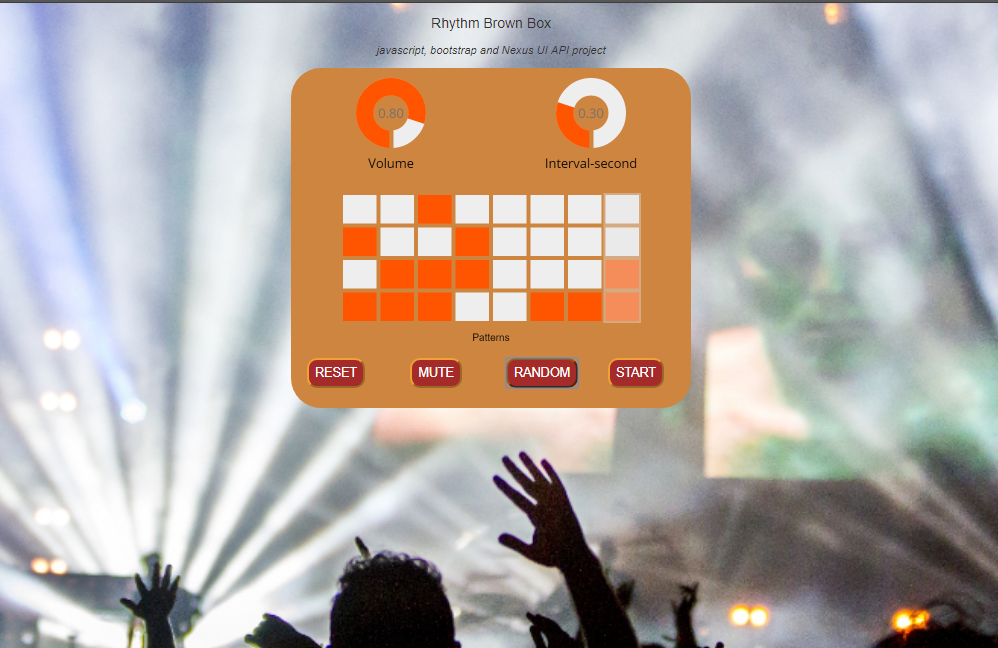

RhythmBrownBox — Version 1
Original build (freeCodeCamp era, pre-2026).
Stack: HTML · CSS · vanilla JS · Web Audio API · NexusUI · Bootstrap 3 — no build step. License: MPL-2.0.
What it is
A browser step sequencer built as a portfolio deliverable and then used as a practice backing track for guitar. Four drum samples (hi-hat, rim, two kicks), an 8-step × 4-track grid, a volume dial and a speed dial.

How it's built
- One page:
index.html+main.css+main.js. No modules, no tooling. - Web Audio API for sound — samples fetched with
XMLHttpRequest+decodeAudioData, played throughAudioBufferSourceNode → GainNode → destination. - Lookahead scheduler: a
setIntervalon the main thread wakes every 250 ms and schedules the next ~375 ms of hits onto the precise audio clock. The right shape — but a main-thread timer is throttled when the tab is backgrounded, so the beat drifts. - NexusUI (vendored, 152 KB, no version marker) draws the dials and the
matrix as
<canvas>widgets. - Bootstrap 3.3.7 grid classes lay out the controls.
- All state is global
vars (seq,step,interval,matrix).
Controls
Volume · Speed (labelled "Interval-second" — sets seconds-per-step directly, so turning it up makes the beat slower) · Reset · Mute · Random · Start (needed on iOS to unlock audio).
Known issues — the reasons v2 exists
- Speed is unitless and inverted; no BPM.
- The pattern isn't saved anywhere; a refresh clears it.
stopPlay()is an empty function and its button is commented out — there is no working Stop.- The main-thread scheduler drifts in a background tab.
.headearCSS typo (the title never gets its rule),width: 100x(not a unit, so the declaration is dropped), an unclosed@mediablock (browsers auto-close it).- The two kick samples are loaded into swapped variable names.
- Unused includes on every load: jQuery, Bootstrap JS, Font Awesome, devicon (via RawGit — shut down in 2019), a key-less Google Maps script.
- The canvas widgets have no keyboard path and nothing a screen reader can announce.
About this copy
Packaged as a single self-contained index.html for the portfolio: main.css,
nexusUI.js, main.js and all five assets (4 × .wav, bg.JPG) are inlined.
Application code is unchanged. Two plumbing-only changes:
- The unused RawGit / Maps / Font Awesome / jQuery / Bootstrap-JS includes are dropped (two of them 404 today); Bootstrap's CSS is inlined so the layout still works offline.
- NexusUI bootstraps itself on
setTimeout(fn, 0), which in a current browser fires before<body>is parsed — it finds no<canvas>elements and the dials and matrix stay blank (the original hosted demo does this now too). The two scripts are moved to the end of<body>and a small retry shim re-runs NexusUI's init once the canvases exist, then hands off. v1's look and behaviour are otherwise untouched.